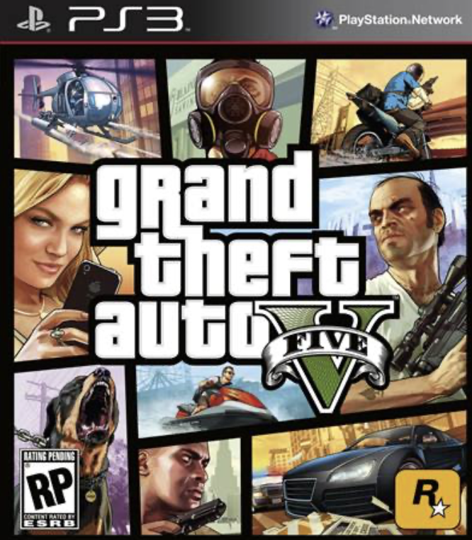
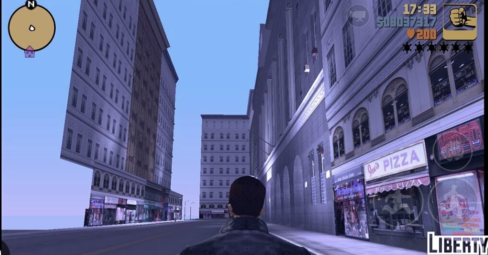
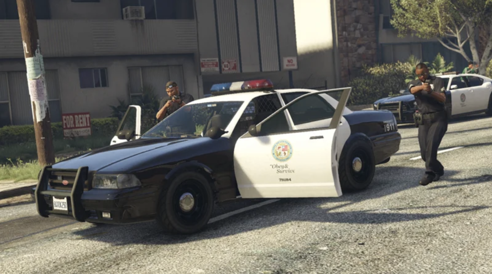

Few video game worlds are as recognizable as the world of Grand Theft Auto (GTA). Although the series is widely known for its scripted missions, cinematic storytelling, and detailed graphics, its sense of realism does not come solely from the story the game tells the player. A scripted narrative can make a game visually impressive or emotionally engaging, but it cannot fully determine whether the world itself feels alive. GTA creates this feeling through the relationship between the player and the game world. Rather than simply moving through a predetermined sequence of events, the player is given the freedom to decide how to navigate the city, what activities to pursue, how to respond to the environment, and whether to follow the intended path of the game at all. As a result, the player's actions become a source of activity within the world. The player can create situations, discover details, and produce unexpected interactions that the developers could not completely predict or script in advance. This freedom is important because it makes the game world feel less like a collection of levels designed to be completed and more like a place that the player can actively inhabit. GTA’s world feels alive not because of its scripted story, but because of what happens when the player interacts with the world. This sense of liveliness is created through three interconnected elements: player agency, which gives players meaningful control over their actions; environmental storytelling, which allows the world to communicate meaning beyond the main narrative; and emergent gameplay, which allows the interaction between the player's choices and the game's systems to produce unpredictable experiences. Together, these elements shift GTA from a world that merely tells a story to a world that the player actively helps bring to life.

The cover art of Grand Theft Auto V (2013) highlights the game’s diverse characters, activities, and interconnected world.
The first thing that allows GTA to create a feeling of realism and immersion to the player is through the Player Agency. Player agency gives players more than the ability to make choices; it gives them the feeling that their choices are actually causing events to happen. Instead of simply following a predetermined story from beginning to end, players are given the freedom to decide what they want to do and, in doing so, create experiences that feel personally theirs. This is one of the main reasons GTA can feel alive: the game world does not only exist to move the player through a scripted narrative; it responds to the player's decision to engage with it in different ways. GTA demonstrates this particularly well by allowing players to ignore the objectives that the game's scripted narrative places in front of them. Once the player gains control of the character, the mission does not have to be the immediate priority. The player can drive aimlessly through the city, crash into passing cars, go to the beach, or explore an unfamiliar part of the map simply because they are curious about what might be there. These actions may not advance the main storyline, but they transform the player from someone who is merely watching a story unfold into someone who is actively living within the game world. The city becomes less like a collection of levels waiting to be completed and more like a place that the player can inhabit. Most importantly, the decision to abandon the intended mission demonstrates that GTA's world is not kept alive solely by its scripted content, but because of the player’s actions and choices. The player therefore becomes a source of activity within the world, producing events that the developers could not completely predict or script. Therefore, Player agency makes the world feel alive because it gives the player the power to create experiences rather than simply consume them.
Screenshot from GTA V showing a character in Los Santos, highlighting the game’s realistic environment and open-world freedom.
The second way GTA creates a sense of liveness is through environmental storytelling. Rather than directly explaining the entire history of its world, GTA gives the player clues about what may have happened before they arrived and allows them to create their own conclusions. Instead of presenting every event through dialogue or a clearly defined script, the game allows the environment itself to communicate information to the player.
For example, if a character enters a room and sees that everything has been thrown around, with glass scattered across the floor and couches turned upside down, the player can conclude that a fight happened there. The game does not need to directly explain what happened. Instead, it provides the player with evidence, and the player begins to think about what may have occurred. In this way, GTA allows the player to connect different clues and create their own understanding of the world. A strange object, an unusual location, or a damaged environment can all suggest that something happened before the player arrived. The player takes these different pieces of evidence and begins to construct their own explanation of what happened.
This makes the player feel more immersed because they are not simply receiving information from the game's script. They are actively piecing together the world for themselves. GTA does not always give the player one clearly defined meaning that everyone is expected to understand in exactly the same way. Instead, it can provide enough information for the player to develop several possible explanations. Because of this, the story can become partly personal. The player is not completely changing the main storyline, but they are creating their own understanding of the world based on what they notice and how they interpret the clues the game provides.
A close example of this can be seen in GTA III's hidden ghost town. The ghost town is a location placed outside the main playable map that was created for the opening bank robbery scene. Although the location is not normally accessible to the player, some players eventually discovered it. When players recognize the location and realize that it is the same place shown in the opening scene, the discovery creates questions that the main story does not directly answer. Why is this location hidden? Why does this part of the world exist outside the playable map? Is there more to the game's world than what the main story has shown us?
At this moment, the player begins to discover more than what the main story explicitly explains. The game has not given the player a mission telling them to find the ghost town, nor has it directly explained why the location exists outside the map. Instead, the player has discovered it through exploration and has connected it to something they previously saw in the opening scene. The player is therefore no longer simply receiving information from the script. They are actively piecing together the world and creating their own understanding of its history.
This is what makes the ghost town significant to GTA's sense of immersion. The player begins to feel as though the world exists beyond what they are directly told. The discovery suggests that there are places, events, and connections that existed before the player found them. In this way, the world feels less like a collection of locations created only for the player's immediate experience and more like a world with its own history. GTA therefore feels alive because the player is not simply following a story that has been explained to them line by line. Instead, they are actively discovering details, connecting evidence, and deciding what those details might mean.

The “Ghost Town” area from GTA III, an unfinished and normally inaccessible section of the game world.
The third reason GTA feels real is because of emergent gameplay. Emergent gameplay occurs when a player's actions interact with the game's systems to create situations that were not specifically scripted or predetermined by the developers. We can see this happen successfully in GTA. Many games can be visually realistic yet still feel static and lifeless because they limit the player's freedom and control their ability to create their own experiences. These games may offer players choices, but those choices are often restricted to a limited number of predetermined options rather than allowing players to freely interact with the world and do whatever they want. Emergent gameplay therefore provides an alternative to strictly scripted gameplay.
GTA may provide the player with a mission that instructs them to go to a specific location, chase a person, or shoot a target, but once the player takes control of the character, they can choose how to interact with the world and create their own experiences. The game does not restrict the player to a single sequence of events. Instead, the player's actions can create second-order consequences that the development team did not specifically predict, while the game continues to respond to those actions in a rational and believable way. This is when emergent gameplay occurs.
This is also why the world of GTA feels alive: not because the player simply follows a predetermined sequence of events, but because their actions can produce new situations and become the starting point for further events. For example, when a player steals a car, the game will cause the police to chase them. During the pursuit, the player might crash into pedestrians, collide with other vehicles, and thus more chaos happens, causing the police and surrounding characters to react further. The programmers created the underlying systems that control the police's behaviour and the reactions of people in the world, but they did not need to script this exact sequence of events. The player initiated the first action, and each reaction created the possibility for another event to occur. In this way, the situation emerges through the interaction between the player's choices and the game's systems. The world of GTA therefore feels alive not because every event has been predetermined by the developers, but because the player's actions can set off unpredictable chains of events that the game is capable of responding to.

A police encounter in Grand Theft Auto V, illustrating how the game’s dynamic world creates unpredictable events and interactions beyond the main storyline.
Therefore, GTA is one of the few games that can successfully make players feel immersed in its world, as if they are not simply controlling a character within it, but are actively living inside it. This sense of immersion comes from the combination of player agency, environmental storytelling, and emergent gameplay. Through player agency, players have significant control over their experiences, and their decisions can lead to meaningful outcomes that make them feel like active participants rather than passive observers. Through environmental storytelling, the world communicates information beyond the game's direct narrative, encouraging players to notice details, piece together clues, form their own conclusions, and discover aspects of the world that have not been explicitly explained to them. This creates a sense of curiosity and makes the environment feel more authentic and independent of the main storyline. Finally, through emergent gameplay, the player's actions interact with the game's systems to create consequences and situations that were not necessarily predetermined by the developers. As these systems respond to the player's choices, unexpected experiences can emerge that make each player's time in the world feel unique. Together, these elements demonstrate that GTA's sense of realism and immersion does not come solely from its scripted story. Instead, the world feels alive because the player actively contributes to what happens within it. Rather than simply -following a predetermined narrative, players explore, interpret, influence, and create their own experiences within the game world. GTA ultimately feels alive because the player is not merely placed inside its world but actively helps bring that world to life.
Prompts:
"I’m going to focus my research essay on the video game GTA. What should my overall topic be, and what three high-level concepts should I use to structure my essay?"
"I'm writing a research essay about how, in the video game GTA, the player feels as though the world is alive not because of the game's script, but because of player agency, environmental storytelling, and emergent gameplay. I am currently working on the environmental storytelling section. I want you to extract all the relevant information from this research article that supports my argument. Please be accurate, do not hallucinate, and do not create or add any information that is not actually found in the article."
Usefulness:
Using ChatGPT to summarize my research sources was helpful because it allowed me to quickly identify the information most relevant to my argument about how GTA creates a sense of a living world. Instead of simply summarizing the articles generally, I was able to focus on how each source connected to my three main concepts: player agency, environmental storytelling, and emergent gameplay. This helped me understand the research more clearly and see how I could apply academic ideas to specific examples from GTA. As a result, the summaries helped me organize my research, develop my argument, and connect my sources more effectively to my own analysis.